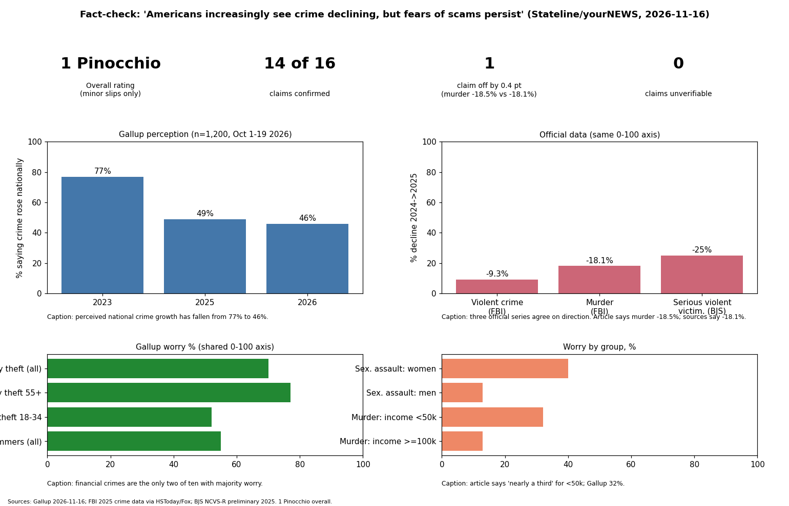

Every checkable figure in the piece matches Gallup (released 2026-11-16; phone poll of 1,200 adults, Oct 1-19, 2026), the FBI 2025 data and the BJS preliminary NCVS-R 2025 report, except one small slip: the piece says the murder rate fell 18.5%, whereas FBI-based coverage gives 18.1% for murder and 18.5% for robbery. Overall rating: 1 Pinocchio (minor).
| Claim | Verdict | Source |
|---|---|---|
| 46% say crime rose nationally; 77% in 2023; 49% last year | Confirmed | Gallup |
| 33% local rise | Confirmed (30% in 2025) | Gallup |
| Republicans down another 15 pts | Confirmed | Gallup |
| Violent crime -9.3% in 2025 | Confirmed | FBI via HSToday |
| Murder rate 4.1 per 100,000 | Confirmed (ties 1955-56 low) | FBI via HSToday |
| Murder fell 18.5% | Slightly off: 18.1% | FBI via HSToday/Fox |
| BJS nonfatal violent excl. simple assault -25% | Confirmed (9.9 to 7.4 per 1,000) | BJS |
| 70% identity theft, 55% scammers, only majority of 10 | Confirmed | Gallup |
| 22% worry about murder | Not seen in fetched summary; not contradicted | Gallup |
| 77% (55+) vs 52% (under 35) identity theft | Confirmed (Gallup group is 18-34) | Gallup |
| Women worry more on all 8 nonfinancial crimes; 40% vs 13% sexual assault | Confirmed (40/13) | Gallup |
| Under $50k nearly a third worry murder vs 13% | Confirmed (32%, 13%) | Gallup |
The piece contains no attributed direct quotes beyond the data sources in the version I could access.